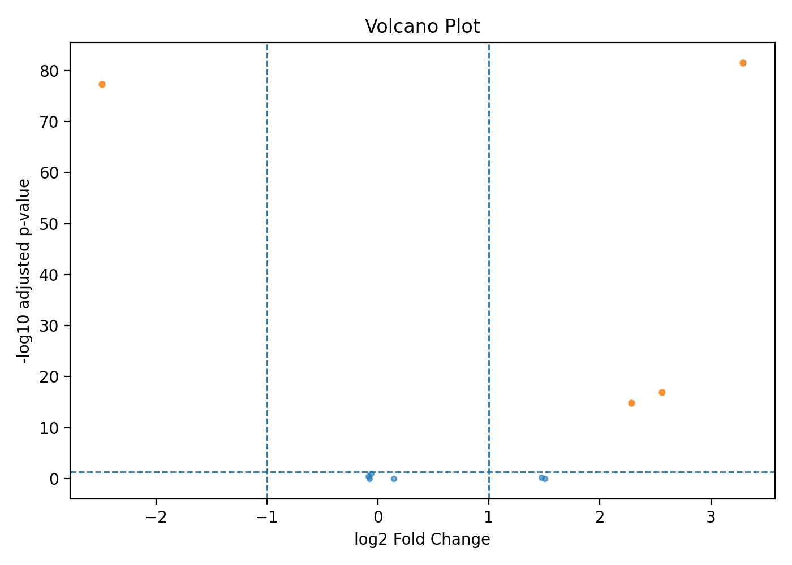

ClawBio / Hands-on workshop
Build one useful,
verifiable skill.
Inspect rnaseq-de. Run it. Check it.
Then scope your own contribution.
Manuel Corpas · ClawBio
Make the result checkable
One defined input.
One useful output.
One observable check.
An agent can execute a command. You still own the question, the design and the judgement.
Start with the actual folder
skills/rnaseq-de/
SKILL.md
rnaseq_de.py
examples/
demo_counts.csv
demo_metadata.csvRead the contract in the instructions.
Inspect the data before running it.
Find the implementation that produces the result.
Two tables define this example
Counts
Genes in rows.
Samples in columns.
Count-like values.
Sample metadata
Matching sample identifiers.
Control or treated.
Recorded batch.
Counts + metadata → differential expression
Bundled toy data: 10 genes, 6 samples. No biological discovery is claimed.
Name the comparison before running
Design: ~ batch + condition Contrast: condition,treated,control Backend: pydeseq2
Positive log2 fold change: higher in treated.
Does the experimental design let you separate batch from condition?
Run the skill with a named backend
MPLBACKEND=Agg python skills/rnaseq-de/rnaseq_de.py \
--demo \
--backend pydeseq2 \
--output /tmp/clawbio-workshop-rnaseqRun from the checkout root with a prepared environment.
Use a fresh output folder for each run.
Rehearsed with PyDESeq2 0.5.4. Setup, source pin and full commands
Read the table before the plot
- Match samples: counts and metadata agree.
- Confirm execution: result.json names pydeseq2.
- Check direction: GeneA positive, GeneB negative in this fixture.
- Check identifiers: all 10 expected genes appear.
Directional sanity checks support this demonstration. They do not validate every dataset or model assumption.
A plot still needs an explanation

Actual toy rehearsal output. Inspect the table and warnings before interpreting significance.
A successful run has limits
- The tiny fixture emitted warnings: low residual degrees of freedom and numerical issues.
- Nine manifest hashes were verified. The separate checksum file supplies evidence.
- Some provenance fields were empty: input_checksum and datasets in result.json.
Execution success is not statistical or biological validation.
Check when the skill should stop
Remove one sample row from a copy of the metadata.
Run with the unchanged count table.
Metadata missing samples
Restore the correct metadata or stop.
Do not invent the missing label.
This specific rejection was tested. It is not evidence that every invalid input is handled.
Connect skills through a real contract
rnaseq-de → de_results.csv → diff-visualizer
Required columns: gene, log2FoldChange,
and padj or pvalue.
A new visualisation does not change the inference.
Check identifiers, units and meaning as well as file format.
Optional demonstration. Pinned source
Find a gap before building
Inspect existing skills and tests. Reuse what already works.
- A small adapter with an equivalence check.
- A regression fixture for a reproducible failure.
- A missing validation check, if it is truly missing.
- A documentation fix or a precise bug report.
These are candidate contribution types, not claims of known gaps in rnaseq-de.
Write your smallest useful contribution
Define it
- Who needs the result?
- Exact input and output.
- Existing tool to reuse.
- Work you will leave out.
Make it testable
- One known-answer check.
- One invalid-input check.
- Builder and reviewer.
- First runnable checkpoint.
Ask a partner to explain your scope
Given [input], we produce [output].
We know it worked when [check].
We leave out [excluded work].
If your partner has to invent a missing detail, make the scope more concrete.
Your demo
Show the input.
The result. The check.
Explain one limitation.
A reproducible failure can be a useful contribution.